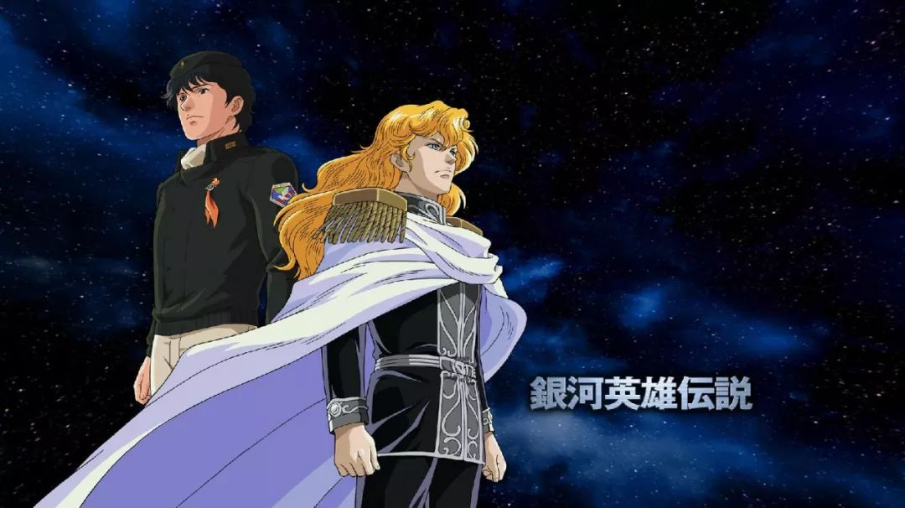

Legend of the Galactic Heroes (Japanese: 銀河英雄伝説, Hepburn: Ginga Eiyū Densetsu), sometimes abbreviated as LOTGH, LOGH or Gin'eiden (銀英伝) in Japanese, is a series of science fiction novels written by Yoshiki Tanaka.
In humanity's distant future, two interstellar states – the monarchic Galactic Empire and the democratic Free Planets Alliance – are embroiled in a never-ending war. The story focuses on the exploits of rivals Reinhard von Lohengramm and Yang Wen-li, as they rise to power and fame in the Galactic Empire and the Free Planets Alliance, respectively.
